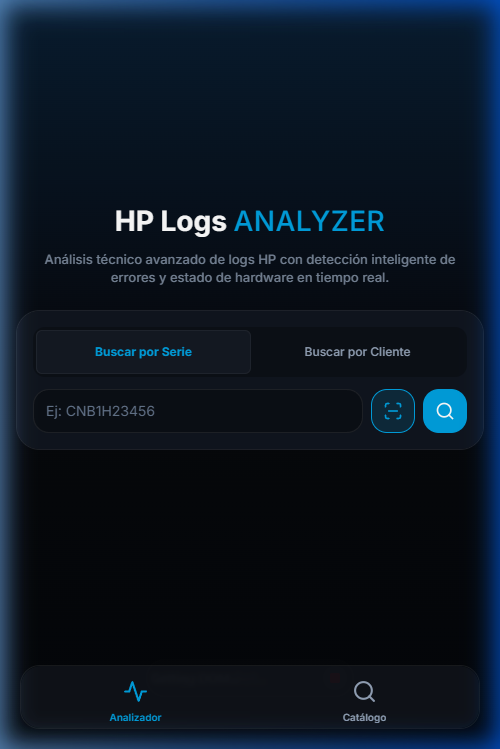
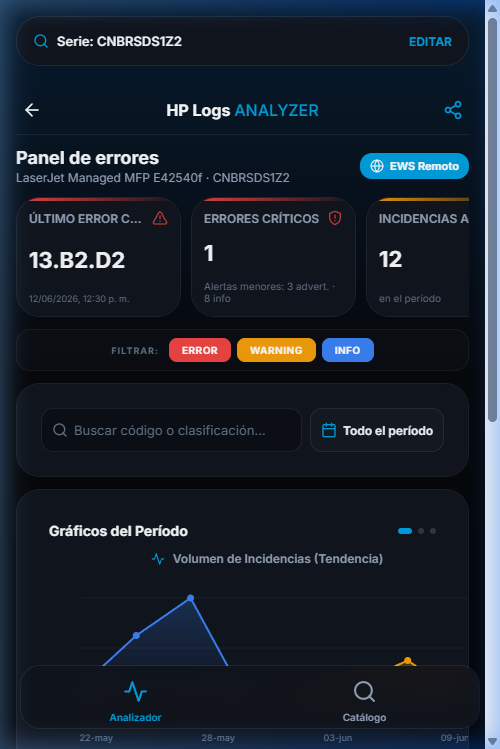
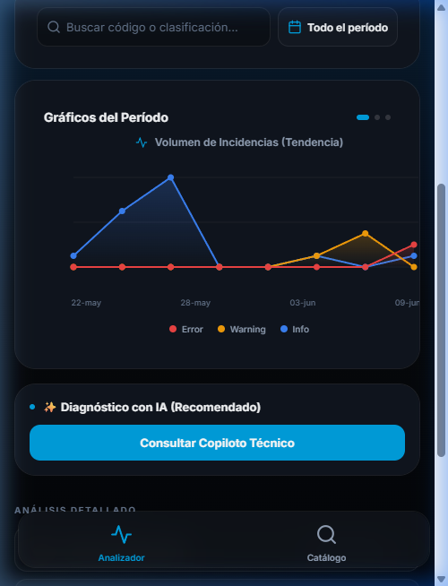
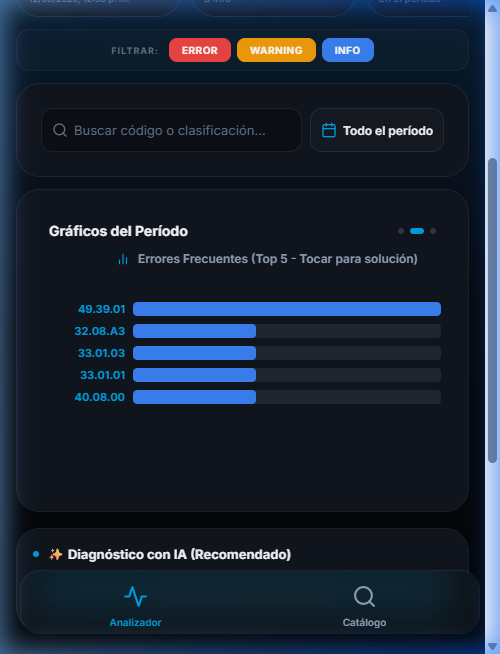
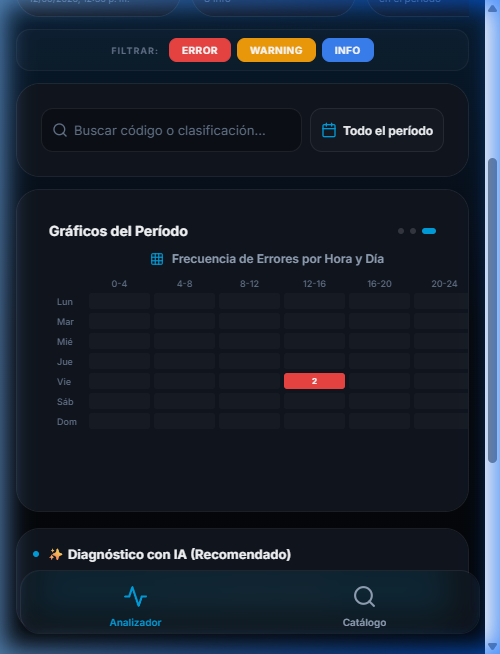
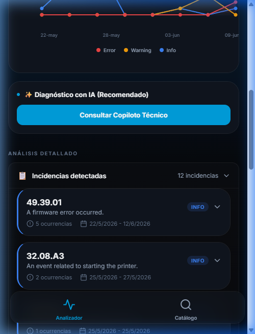
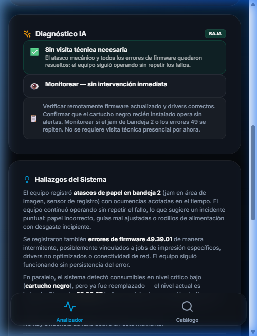
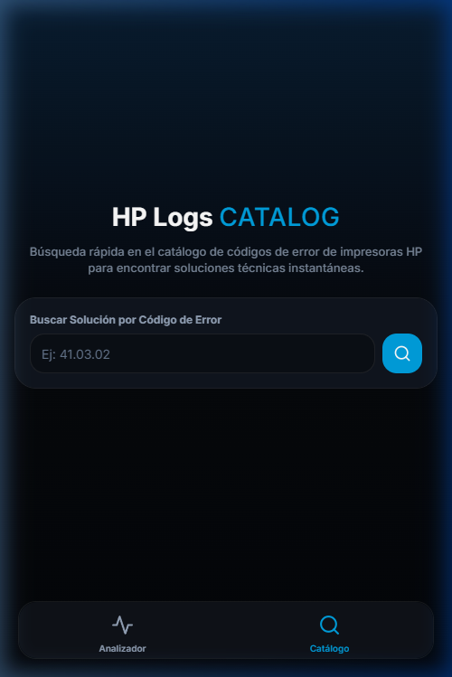
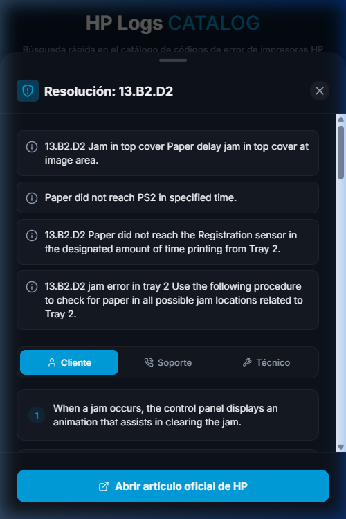

Manual técnico de operaciones de la aplicación móvil de análisis predictivo de logs HP y Copiloto Técnico IA
React Native / Expo Web
VM Google Cloud (sslip.io)
Antigravity AI Engineer
Pantalla inicial de acceso y autenticación. Permite al técnico en campo identificar y consultar el estado de cualquier impresora mediante tres métodos rápidos.
Búsqueda Directa por Serie
Carga directa ingresando la serie única de HP (ej: CNBRSDS1Z2) para iniciar la sincronización de telemetría.
Escaneo Integrado (Lector QR/Barcode)
Activa la cámara nativa del celular para leer etiquetas físicas y autocompletar la serie.
Búsqueda por Cliente y Flota
Permite navegar la estructura de flotas de clientes y listar sus impresoras instaladas asociadas.

Vista consolidada de estado crítico del dispositivo seleccionado. Muestra un diagnóstico inicial de severidad global y telemetría de hardware.
Cajas de Indicadores Clave (KPIs)
Resumen del último error crítico (con código y descripción), cantidad de fallas graves y tasa de páginas promedio por error.
Filtros Rápidos de Severidad
Botones para aislar de forma interactiva los tipos de evento: Errores (Rojo), Advertencias (Amarillo) e Info (Azul).
Acceso EWS Remoto
Enlace directo seguro al Embedded Web Server (EWS) de la impresora para diagnóstico detallado en vivo.

Gráficos interactivos en la sección media del analizador. Visualizan el comportamiento histórico de fallas para detectar anomalías repetitivas.
Gráfico de Volúmenes por Fecha
Muestra un historial interactivo con la cantidad de incidencias registradas por día, identificando picos de fallas.
Distribución Top de Códigos
Identifica de un vistazo los errores más comunes acumulados en el log de la impresora.
Navegación Táctil
Deslizamiento lateral (carrusel nativo móvil) optimizado para transicionar suavemente entre los diferentes gráficos analíticos.



Detalle cronológico de los fallos encontrados en la lectura de logs del dispositivo. Agrupa eventos relacionados para simplificar la lectura.
Agrupación por Código de Error
Los eventos repetitivos se agrupan en una única tarjeta de incidencia que indica la cantidad de apariciones en el log.
Rangos de Contadores y Fechas
Indica con precisión las fechas de inicio/fin de la falla y el rango de páginas del contador de la impresora donde ocurrió.
Acceso a Solución Técnica
Cada tarjeta incluye un botón directo para consultar los pasos de resolución específicos de ese código de error.

Asistente experto basado en Inteligencia Artificial integrado. Proporciona resúmenes técnicos cruzando logs, alertas activas y consumibles.
Diagnóstico de Causa Raíz
Explica en lenguaje natural el origen técnico del problema basándose en la combinación de códigos históricos.
Plan de Acción y Repuestos
Detalla una secuencia lógica de pasos para el técnico y sugiere si es necesario reemplazar piezas de hardware específicas.
Compartición Inmediata
Permite compartir el reporte del análisis inteligente por mensajería o email mediante el menú nativo del dispositivo.

Buscador y catálogo de códigos de error de HP. Diseñado para consultas rápidas sin requerir la carga completa de un archivo de log.
Buscador en Tiempo Real
Filtra la base de datos de errores instantáneamente a medida que el técnico escribe el código en el campo.
Base de Datos Integrada
Accede a descripciones técnicas de fallas críticas comunes de HP cargadas directamente en el sistema.
Acceso Offline con Caché Local
Las soluciones consultadas quedan guardadas en la memoria del celular mediante AsyncStorage para consulta offline en áreas sin señal.

Guía detallada de resolución para un código de error específico. Divide el plan de trabajo según la audiencia o el rol de soporte.
Acciones del Ingeniero de Campo
Instrucciones mecánicas de reemplazo de piezas, revisiones físicas de conectores y mediciones de hardware en el sitio.
Acciones del Soporte Remoto
Pasos digitales que se pueden realizar a distancia, como reinicio del dispositivo, upgrades de firmware o configuraciones de red.
Acciones de Usuario Final
Pasos sencillos para el cliente en sitio, como remoción de papel atascado o inspección visual básica de bandejas.
